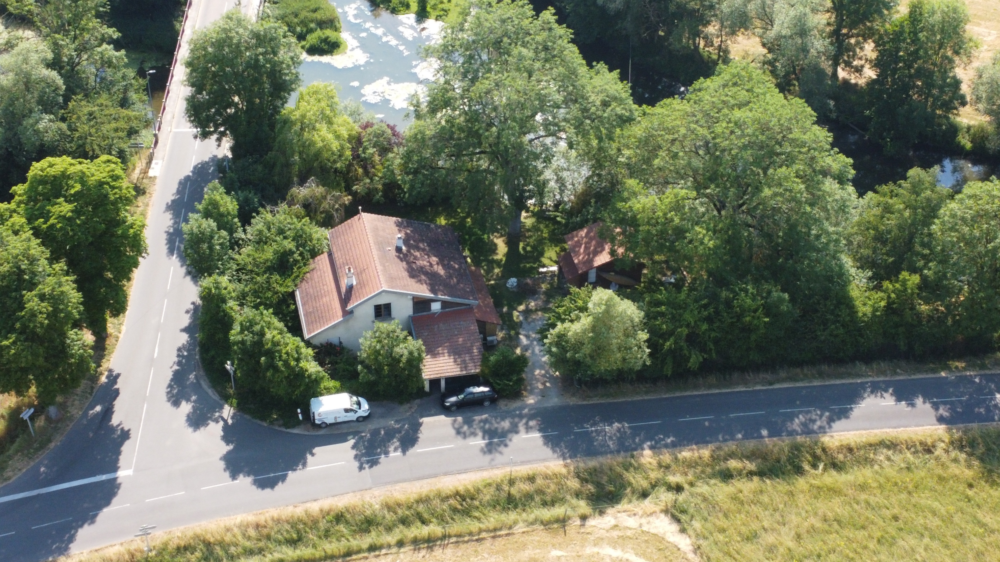
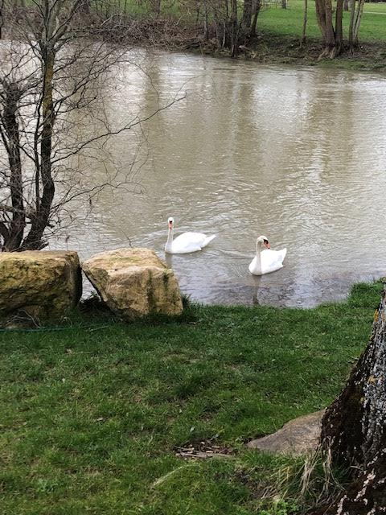
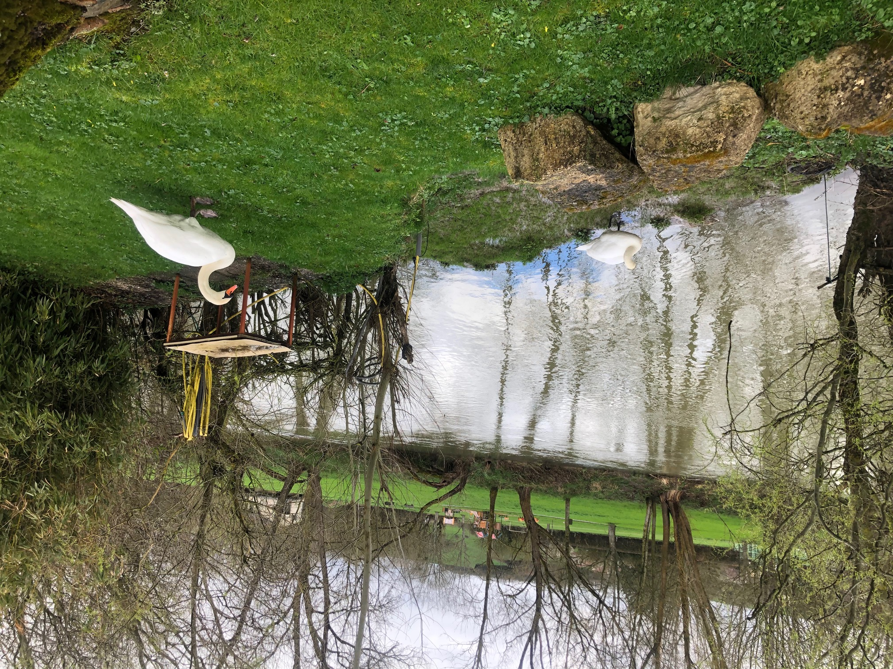
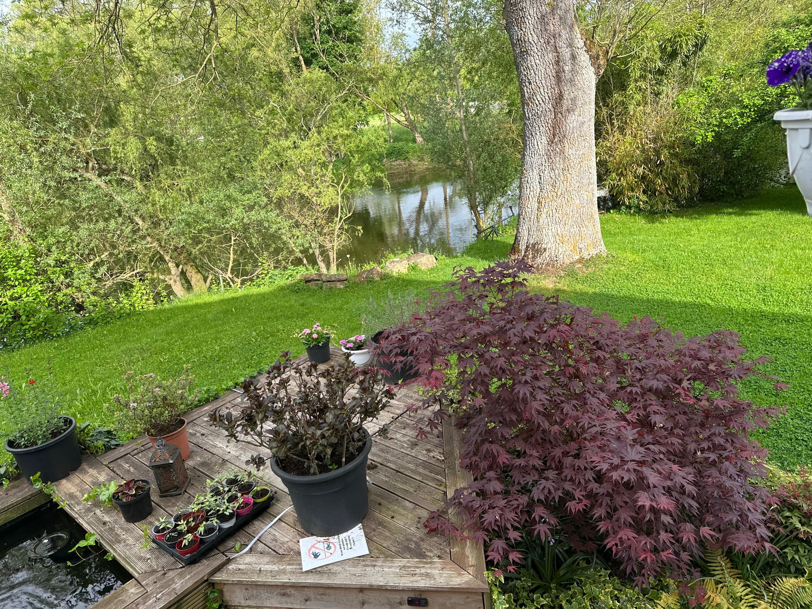
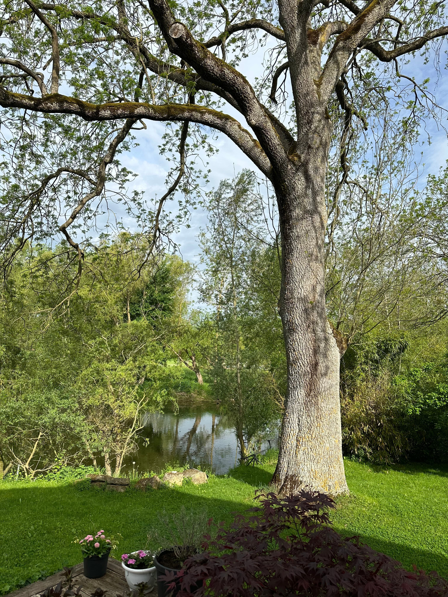
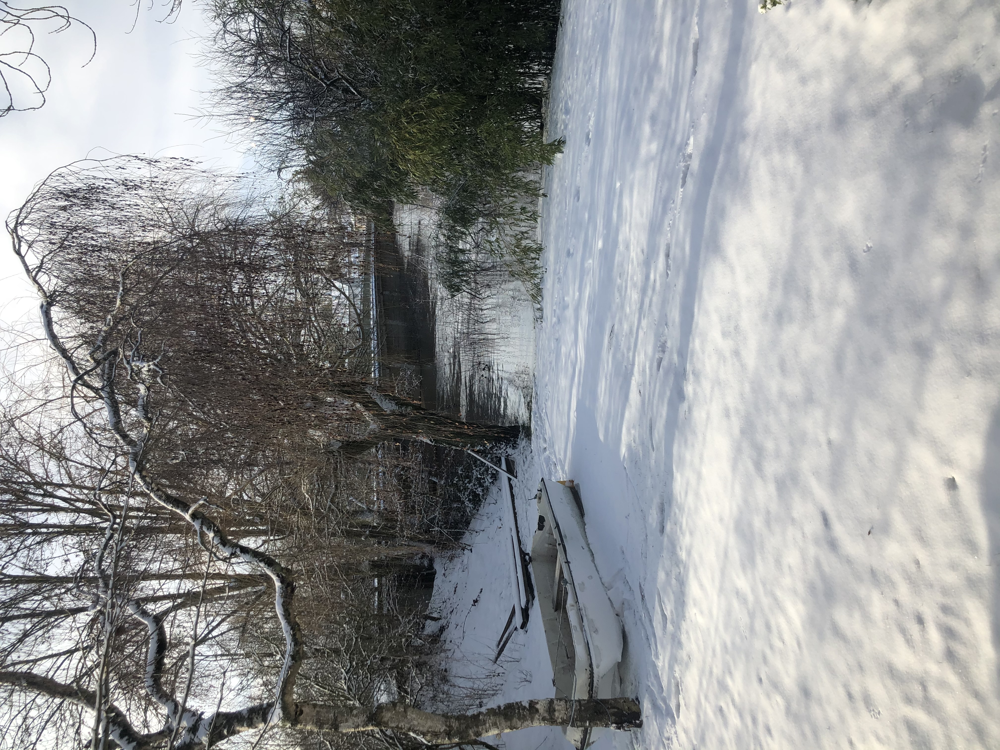
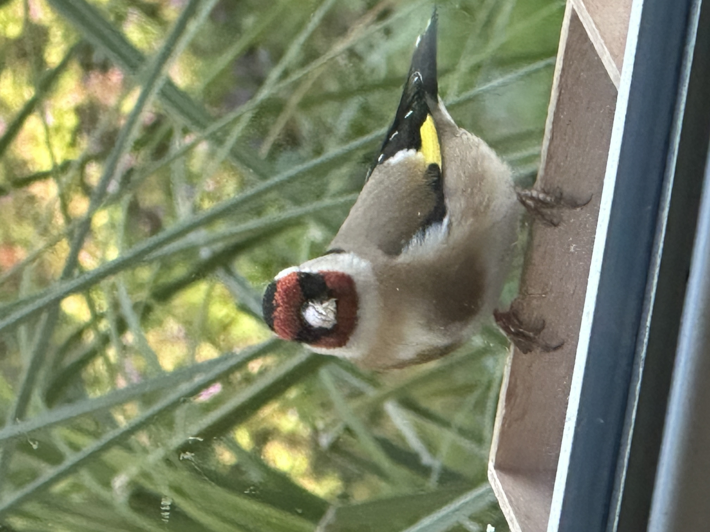
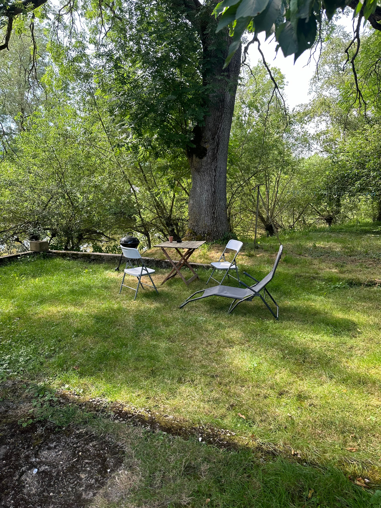
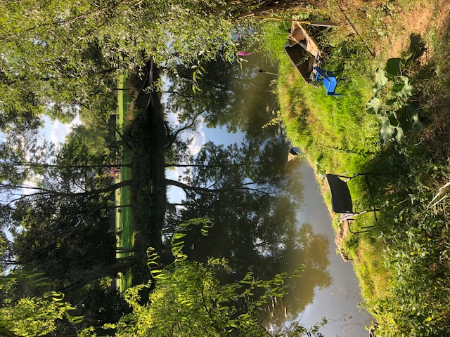
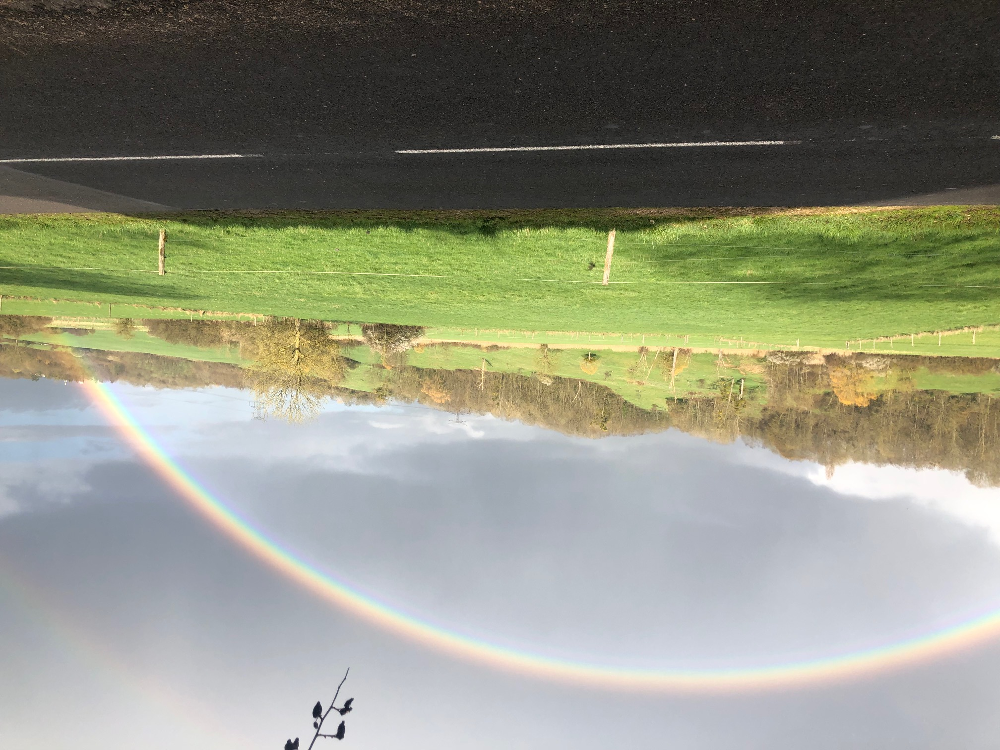

Séjour nature à Pulligny — près de Nancy, Toul, Lunéville, Neuves-Maisons & Vosges
Deux meublés chaleureux au bord de la rivière : Tiny House et Studio Perché. Idéal pêche, détente, couples, familles et télétravail. À seulement 20 min de Nancy, proche de Toul, Lunéville, Neuves-Maisons et aux portes des Vosges.
Accès & Avis Clients
Adresse :
1295 rue de Pierreville
54160 Pulligny
Hébergement proche de Nancy, Toul, Lunéville, Neuves-Maisons et des Vosges
Situés à Pulligny en Meurthe-et-Moselle, nos logements offrent un accès direct à la rivière, un environnement calme et naturel, parfait pour la pêche, la détente et les séjours touristiques ou professionnels. À 20 minutes de Nancy, à proximité de Toul, Lunéville, Neuves-Maisons et des Vosges, c’est le point de départ idéal pour découvrir la Lorraine.